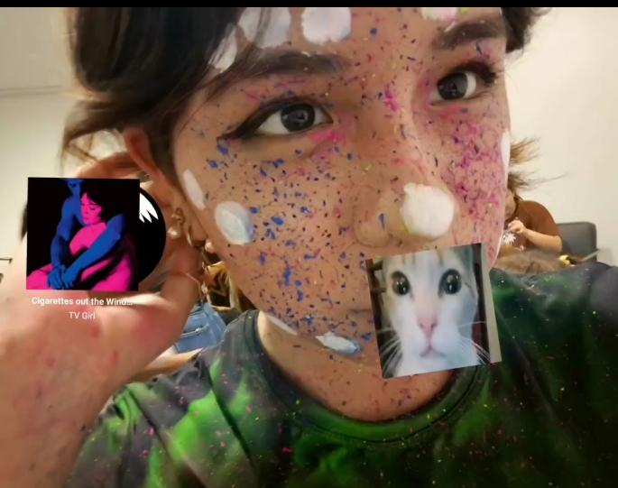
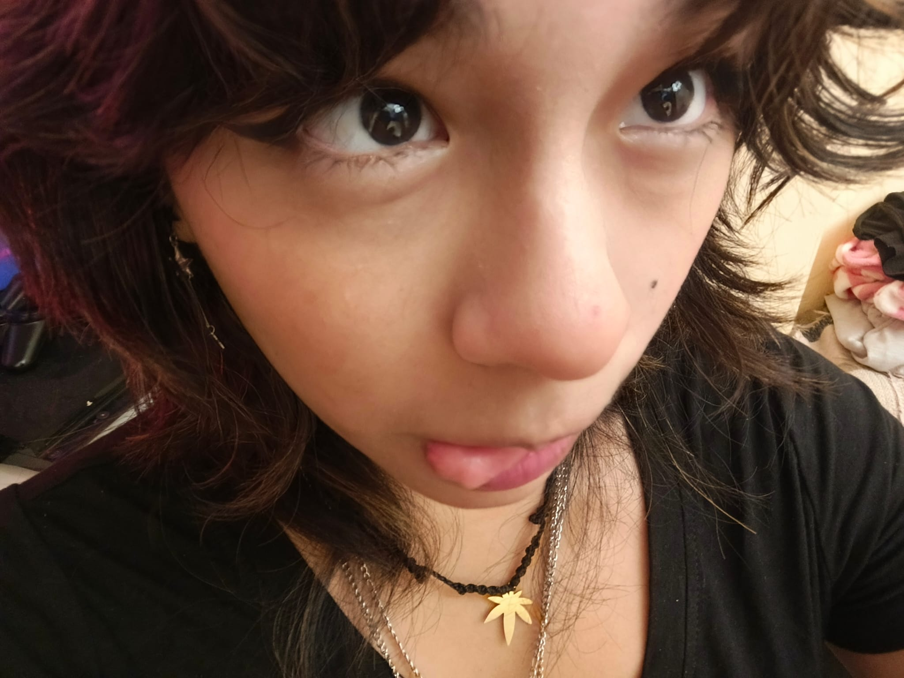
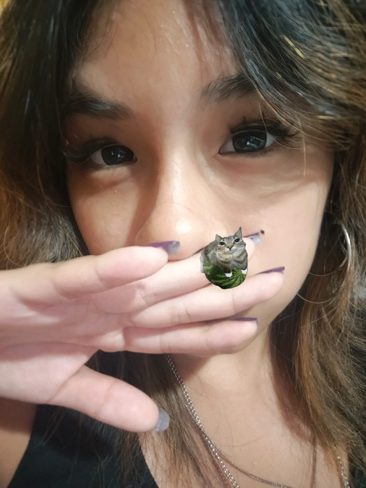

PARA DALY:
CADA GIRASOL QUE VES AQUÍ ES UNA MUESTRA DEL MUCHÍSIMO CARIÑO QUE TE TENGO Y UN LATIDO DE MI CORAZÓN.
ASÍ COMO EL SOL ILUMINA LOS CAMPOS, TÚ ILUMINAS MI VIDA.
QUE ESTAS FLORES TE RECUERDEN LO ESPECIAL QUE ERES PARA MÍ.
¡TE QUIERO MUCHO!